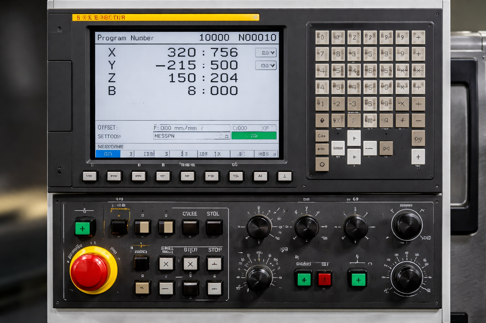

Pantalla de control CNC FANUC con visualización de ejes, velocidad de husillo y parámetros de mecanizado en tiempo real, utilizada en centros de mecanizado y tornos CNC.
Los controles Fanuc son uno de los sistemas CNC más utilizados en centros de mecanizado y tornos industriales. Son conocidos por su fiabilidad, pero con el paso del tiempo pueden aparecer alarmas o errores que provocan la parada de la máquina.
Cuando aparece una alarma en el control CNC es importante identificar su origen para evitar daños en la máquina y reducir el tiempo de parada de producción.
Cuando una máquina CNC presenta alarmas repetitivas o paradas inesperadas, es importante realizar un diagnóstico técnico adecuado. En muchos casos la causa real del problema no es la alarma que aparece en el control, sino un fallo en otro componente del sistema.
Una revisión completa del sistema de control, servos y electrónica puede ayudar a identificar el origen de la avería y evitar futuras paradas de producción.
Si su máquina CNC presenta alarmas o fallos que impiden el funcionamiento normal, nuestro equipo técnico puede ayudarle a diagnosticar y reparar la avería.
Ofrecemos asistencía tecnica, asesoramiento, diagnóstico de averías y modernización de sistemas de control mediante retrofit.
Contacte con nuestro servicio técnico. O solicite una asistencia directamente Solicitar asistencia
La alarma Fanuc 401 es una de las más habituales en máquinas CNC con control Fanuc y, al mismo tiempo, una de las más complejas de diagnosticar. Su aparición indica un fallo en la preparación del sistema de servo, lo que impide cualquier movimiento seguro de la máquina.
La alarma 401 se activa cuando la señal VRDY (Velocity Control Ready) del servoamplificador no está activa. Esto significa que, aunque el control NC haya enviado la orden de preparación a los motores, los amplificadores no han devuelto la confirmación de estado “Ready”.
No se trata de un error de software: es una interrupción física o electrónica en el circuito de potencia o en los sistemas de seguridad de los ejes. Habitualmente está relacionada con la alimentación de los servo drives o con los amplificadores de servo.
El diagnóstico de la alarma 401 implica manipulación de alto voltaje en el bus de corriente continua (DC Link) y comprobación de señales críticas. Un diagnóstico incorrecto o manipulación indebida puede dañar irreversiblemente los módulos electrónicos y encarecer la reparación.
No intente puentear señales de seguridad ni manipular el cableado interno.
La alarma 401 puede tener diferentes causas según el modelo de control o la generación de los drives, por lo que muchas veces es necesario un diagnóstico técnico completo para localizar el módulo defectuoso.
Este error requiere una medición precisa de voltajes en el bus de corriente continua y una revisión de los códigos de estado en el hardware para identificar el módulo defectuoso.
En CNC Systems contamos con amplia experiencia y herramientas de diagnóstico específicas para resolver averías en controles FANUC de forma rápida y segura, minimizando el tiempo de parada de su producción
⚡ Si necesita asistencia técnica para su máquina CNC, no dude en ponerse en contacto con nosotros.
La alarma Fanuc 410 es relativamente frecuente en máquinas CNC con control Fanuc y puede tener dos interpretaciones principales dependiendo del tipo de máquina y configuración. En ambos casos, implica una condición crítica que detiene la máquina para evitar daños mecánicos o eléctricos.
Esta alarma puede aparecer en dos situaciones diferentes:
La interpretación exacta depende del tipo de máquina (torno, fresadora, etc.) y de la configuración del control.
No se recomienda reiniciar la máquina sin antes identificar la causa, ya que podría provocar daños en el husillo, en los ejes o incluso una colisión. En caso de sobrecarga repetitiva, es fundamental detener el proceso y revisar las condiciones de mecanizado.
Debido a que la alarma Fanuc 410 puede tener distintos orígenes según la máquina, un diagnóstico técnico detallado suele ser necesario para resolverla de forma definitiva.
¿Tiene una máquina CNC con alarma Fanuc 410?
En CNC Systems contamos con amplia experiencia en el diagnóstico y reparación de averías en controles FANUC, husillos y servos.
Si su máquina CNC presenta esta alarma o está parada, nuestro equipo técnico puede ayudarle a identificar la causa y encontrar la solución más adecuada.
⚡ Para asistencia técnica, póngase en contacto con nosotros.
La alarma Fanuc 411 es habitual en máquinas CNC con control Fanuc y, al igual que la 410, puede tener diferentes interpretaciones según la configuración. En todos los casos, indica una condición fuera de límites que obliga a detener la máquina para evitar daños.
Esta alarma puede aparecer en dos situaciones principales:
El significado exacto dependerá del tipo de máquina (torno, fresadora, centro de mecanizado, etc.) y de la configuración del control.
No se recomienda continuar la operación ni resetear la alarma sin antes identificar la causa. La sobrevelocidad del husillo o el impacto contra un límite pueden provocar daños graves en la máquina o en la herramienta.
Debido a que la alarma Fanuc 411 puede tener distintos orígenes según la máquina, es recomendable realizar un diagnóstico técnico completo para asegurar una solución definitiva.
¿Tiene una máquina CNC con alarma Fanuc 411?
En CNC Systems contamos con amplia experiencia en el diagnóstico y reparación de averías en controles FANUC, husillos y servos.
Si su máquina CNC presenta esta alarma o está parada, nuestro equipo técnico puede ayudarle a identificar la causa y encontrar la solución más adecuada.
⚡ Para asistencia técnica, póngase en contacto con nosotros.
La alarma Fanuc 414 indica un fallo en el sistema de servo digital, generalmente relacionado con el servo amplifier, el servomotor o la comunicación entre el control CNC y el eje afectado.
El control detecta que el sistema de servo no responde correctamente, impidiendo el movimiento seguro del eje y provocando la parada de la máquina.
No reiniciar la máquina sin diagnóstico previo, ya que puede provocar daños en servo, amplificador o electrónica.
¿Tiene una máquina CNC con alarma Fanuc 414?
En CNC Systems somos especialistas en reparación de servos FANUC.
⚡ Contacte con nuestro servicio técnico.
La alarma Fanuc 417 es una condición crítica relacionada con el control de posición del eje. Indica que el sistema de servo no es capaz de seguir la trayectoria ordenada por el CNC, generando un error de seguimiento excesivo.
El control Fanuc compara continuamente la posición real del eje (medida por el encoder o sistema de medición) con la posición teórica programada. La alarma 417 se activa cuando la diferencia entre ambas supera el límite permitido.
Este error suele indicar que el motor está intentando mover el eje, pero existe una resistencia mecánica, un fallo en la medición o un problema en el sistema de control que impide alcanzar la posición correctamente.
Esta alarma indica una situación en la que el sistema mecánico está siendo forzado. No se recomienda intentar reiniciar la máquina sin antes identificar la causa del problema.
Forzar el movimiento del eje o insistir en el arranque puede provocar daños graves en los componentes mecánicos y eléctricos.
"Un error de seguimiento excesivo puede provocar colisiones o daños estructurales si no se detiene la máquina a tiempo."
Dependiendo del modelo de control Fanuc (0i, 16i, 18i, 31i, etc.), el origen del error puede variar entre problemas mecánicos, eléctricos o de configuración. Un diagnóstico profesional permite determinar si el fallo está en el eje, en el servo o en el sistema de medición.
En muchos casos, esta alarma es el síntoma de un problema progresivo que, si no se corrige, puede derivar en una avería mayor.
Este error requiere una intervención rápida para evitar daños en el sistema mecánico y garantizar la precisión de la máquina.
En CNC Systems contamos con amplia experiencia en diagnóstico de fallos de servo y problemas de seguimiento en controles FANUC.
⚡ Si necesita asistencia técnica para su máquina CNC, no dude en ponerse en contacto con nosotros.
La alarma Fanuc 430 es un error crítico relacionado con el sistema de control de posición del eje. Indica que el CNC no recibe correctamente la información del sistema de medición, lo que impide conocer la posición real del eje con precisión.
El control Fanuc depende de señales de realimentación procedentes del encoder del motor o de reglas ópticas lineales. La alarma 430 se activa cuando estas señales son erróneas, inexistentes o incoherentes con el movimiento del eje.
Este fallo afecta directamente al lazo de control de posición, provocando que el CNC pierda la referencia exacta del eje, lo que obliga a detener la máquina por seguridad.
La alarma 430 indica una condición en la que el CNC no puede garantizar la posición real del eje. No se debe continuar la operación ni intentar reiniciar la máquina sin un diagnóstico previo.
Trabajar sin una referencia de posición fiable puede provocar movimientos inesperados y situaciones peligrosas durante el mecanizado.
"Un fallo en el sistema de medición puede provocar colisiones graves al perder el control de la posición real del eje."
Dependiendo del modelo de control Fanuc (Series 0i, 16i, 18i, 31i, etc.), la alarma puede estar relacionada con distintos tipos de sistemas de medición. Un diagnóstico técnico permite determinar si el fallo está en el encoder, en el cableado o en el propio servo.
En muchos casos, este tipo de error es intermitente al inicio, pero tiende a agravarse si no se corrige a tiempo.
Este error requiere una intervención rápida para evitar daños mecánicos y garantizar la precisión del sistema CNC.
En CNC Systems contamos con amplia experiencia en diagnóstico de fallos de posición y sistemas de medición en controles FANUC.
⚡ Si necesita asistencia técnica para su máquina CNC, no dude en ponerse en contacto con nosotros.
La alarma Fanuc 500 es un error general del sistema de servo que indica un fallo en el amplificador o en el control de uno o varios ejes. A diferencia de otras alarmas más específicas, esta señal actúa como una protección global ante condiciones anómalas en el sistema de accionamiento.
El control Fanuc supervisa continuamente el estado de los servo amplifiers y la respuesta de los ejes. La alarma 500 se activa cuando se detecta una condición fuera de los parámetros normales de funcionamiento, como errores eléctricos, fallos internos del amplificador o comportamientos anómalos en el servo.
Este error no siempre identifica directamente el componente exacto afectado, por lo que suele requerir un diagnóstico más profundo para determinar su origen.
La alarma 500 indica un fallo general en el sistema de servo, por lo que no se recomienda reiniciar la máquina sin identificar la causa del problema.
Al tratarse de un error global, puede afectar a varios componentes simultáneamente, aumentando el riesgo de daños si se fuerza el funcionamiento.
"Reiniciar la máquina sin diagnóstico puede agravar el fallo y provocar daños en múltiples componentes del sistema de servo."
Dependiendo del modelo de control Fanuc (Series 0i, 16i, 18i, 31i, etc.), la alarma puede estar asociada a diferentes módulos del sistema. Un técnico especializado puede identificar el origen exacto mediante herramientas de diagnóstico y lectura de códigos internos del amplificador.
En muchos casos, este error es un síntoma de un problema subyacente más complejo, como fallos eléctricos o mecánicos que deben ser analizados en conjunto.
Este error requiere una intervención rápida para evitar daños mayores en el sistema de servo y garantizar la continuidad de la producción.
En CNC Systems contamos con amplia experiencia en diagnóstico de fallos de servo y reparación de sistemas FANUC, incluyendo amplificadores y motores.
⚡ Si necesita asistencia técnica para su máquina CNC, no dude en ponerse en contacto con nosotros.
La alarma Fanuc 700 es una señal crítica relacionada con el sistema de alimentación y los amplificadores de servo del CNC. Indica que se ha producido una sobretensión o una condición eléctrica fuera de rango, lo que obliga a detener la máquina para proteger los componentes electrónicos
El sistema Fanuc monitoriza continuamente los niveles de tensión en los módulos de potencia y amplificadores. La alarma 700 se activa cuando se detecta un voltaje superior al permitido, ya sea en la alimentación principal, en el bus DC o en el propio servo amplifier.
A diferencia de otras alarmas más específicas, este error actúa como protección global frente a condiciones eléctricas peligrosas que podrían dañar múltiples componentes del sistema.
Este tipo de alarma está directamente relacionada con riesgos eléctricos. Cualquier intervención debe realizarse con la máquina completamente desconectada y siguiendo protocolos de seguridad eléctrica.
No se recomienda reiniciar la máquina repetidamente sin identificar la causa, ya que las sobretensiones pueden seguir presentes y agravar el daño en los componentes.
"Las sobretensiones pueden destruir módulos electrónicos en segundos si no se actúa correctamente."
Dependiendo del modelo de control Fanuc (Series 0i, 16i, 18i, 31i, etc.), la alarma puede estar relacionada con diferentes módulos del sistema de potencia. Un técnico especializado puede identificar el origen exacto mediante herramientas de diagnóstico y lectura de parámetros internos.
En muchos casos, este tipo de fallo no es puntual, sino consecuencia de un problema eléctrico recurrente que debe corregirse para evitar futuras averías.
Este error requiere una intervención rápida para evitar daños en los módulos electrónicos y garantizar la estabilidad del sistema CNC.
En CNC Systems contamos con experiencia en diagnóstico eléctrico avanzado y reparación de sistemas FANUC, incluyendo amplificadores y módulos de potencia.
⚡ Si necesita asistencia técnica para su máquina CNC, no dude en ponerse en contacto con nosotros.
La alarma Fanuc 701 es una señal de advertencia crítica relacionada con la gestión térmica del control CNC. Indica que el ventilador de refrigeración de la unidad de control o del módulo principal ha reducido su velocidad o se ha detenido por completo.
El sistema de control monitoriza constantemente las RPM de los ventiladores internos. La alarma 701 se dispara cuando el sensor de velocidad detecta que el flujo de aire es insuficiente para mantener la electrónica en una temperatura de operación segura. A diferencia de otros errores, este suele dar un margen de tiempo antes de bloquear el sistema por completo para evitar daños térmicos irreversibles.
Aunque parece un fallo menor, el diagnóstico requiere abrir la unidad de control. Cualquier manipulación de las placas electrónicas debe hacerse con el equipo apagado y con protección contra descargas electrostáticas (ESD).
No ignore esta alarma operando la máquina con el armario abierto, ya que esto altera el flujo de aire diseñado y permite la entrada de contaminantes externos.
Dependiendo de la serie de Fanuc (i-Series, 0i, 31i), el ventilador afectado puede estar integrado en la pantalla LCD o en el rack del CNC. Un técnico especializado puede identificar exactamente qué unidad está fallando mediante el registro de diagnósticos internos.
Este error requiere una intervención rápida para evitar que el calor dañe los procesadores principales del sistema CNC.
En CNC Systems disponemos de stock de ventiladores originales y recambios críticos para controles FANUC, garantizando una reparación inmediata para que su producción no se detenga.
⚡ Si necesita asistencia técnica para su máquina CNC, no dude en ponerse en contacto con nosotros.
La alarma Fanuc 750 indica una condición de sobrecorriente en el sistema de servo o en el amplificador. Este tipo de error aparece cuando el consumo eléctrico supera los límites de seguridad establecidos por el fabricante.
Este error se produce cuando el servo amplifier detecta un consumo excesivo de corriente, generalmente provocado por un esfuerzo mecánico elevado o por un fallo interno en el sistema.
No se recomienda reiniciar la máquina sin identificar la causa. La sobrecorriente puede provocar daños graves en el sistema eléctrico y mecánico.
Debido a que la alarma Fanuc 750 puede tener distintos orígenes, es recomendable realizar un diagnóstico técnico completo.
¿Tiene una máquina CNC con alarma Fanuc 750?
En CNC Systems contamos con amplia experiencia en el diagnóstico y reparación de averías en controles FANUC, servos y amplificadores.
Si su máquina CNC presenta esta alarma o está parada, nuestro equipo técnico puede ayudarle a identificar la causa y encontrar la solución más adecuada.
⚡ Para asistencia técnica, póngase en contacto con nosotros.
La alarma Fanuc 910 indica un problema en la comunicación interna del CNC o en el sistema de entradas/salidas (I/O). Este fallo puede impedir el funcionamiento correcto de ejes, sensores o periféricos de la máquina.
Este error aparece cuando el control CNC no puede comunicarse correctamente con alguno de sus módulos internos o dispositivos externos, como PLC, módulos de E/S o sensores.
No se recomienda reiniciar la máquina repetidamente sin identificar el origen del fallo, ya que puede ocultar un problema mayor en el sistema de control.
Debido a la variedad de posibles causas, es recomendable realizar un diagnóstico técnico completo.
¿Tiene una máquina CNC con alarma Fanuc 910?
En CNC Systems contamos con experiencia en diagnóstico de fallos de comunicación y sistemas de control FANUC.
Si su máquina CNC presenta esta alarma o está parada, nuestro equipo técnico puede ayudarle a identificar la causa y encontrar la solución más adecuada.
⚡ Para asistencia técnica, póngase en contacto con nosotros.
Cuando una máquina CNC pierde la referencia de un eje, el control puede mostrar errores relacionados con la posición o con el sistema de medición.
Este problema suele estar relacionado con:
En estos casos puede ser necesario realizar un nuevo proceso de referenciado o revisar el sistema de medición del eje.
Algunas alarmas Fanuc están relacionadas con problemas de comunicación entre distintos módulos del control CNC.
Esto puede deberse a: